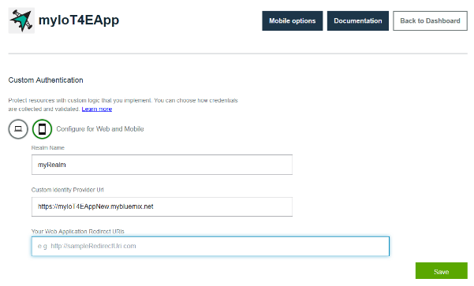

Configuration de la sécurité et de la connectivité mobile
Dernière mise à jour : 19 septembre 2016
Activez la sécurité et les communications mobiles en configurant IBM® Mobile Client Access for Bluemix®. Vous devez effectuer cette tâche pour pouvoir utiliser le modèle d'application mobile, mais il suffit de l'effectuer une fois.
Avant de commencer
Avant de commencer, vous devez effectuer les tâches suivantes :
-
Déployez une instance du module de démarrage IoT for Electronics dans votre organisation Bluemix. Cette opération entraîne le déploiement automatique des services et des applications de composant, y compris IBM® Mobile Client Access for Bluemix®.
-
Comme le processus de configuration varie légèrement selon la version de la console Bluemix que vous utilisez, lisez les instructions concernant votre version.
Vous pouvez identifier la version que vous utilisez en recherchant les options suivantes :
- [Nouvelle version de Bluemix](#configMCAnew). Si vous utilisez la nouvelle version de
Bluemix, l'option Accédez à la version classique apparaît dans la section d'en-tête du tableau de bord.
- [Version classique de Bluemix](#configMCAclassic). Si vous utilisez la version
classique de Bluemix, l'option permettant d'essayer la nouvelle interface Bluemix apparaît dans la section d'en-tête.
Configuration de Mobile Client Access dans la nouvelle version de Bluemix
- Si vous venez de déployer le module de démarrage IoT for Electronics, l'onglet Initiation de l'application de démarrage s'affiche, et vous pouvez passer à l'étape suivante de cette procédure. Si l'application de démarrage ne s'affiche pas, ouvrez votre tableau de bord Bluemix et lancez votre application de démarrage IoT for Electronics en cliquant sur sa vignette.

-
Dans l'onglet Connexions, cliquez sur le service Mobile Client Access pour l'ouvrir.

-
Dans la page Configuration de l'authentification, localisez l'adresse URL de votre application de démarrage IoT for Electronics en cliquant sur Options pour application mobile. Copiez l'adresse URL qui se trouve dans la zone Acheminer.

-
Dans la section Personnalisé de la page Configuration de l'authentification, cliquez sur Configurer**.

-
Entrez les données d'authentification suivantes, puis cliquez sur Sauvegarder :
- Nom de domaine : entrez myRealm.
- URL de fournisseur d'identité personnalisé : entrez l'adresse URL que vous avez copiée précédemment afin d'identifier votre application de démarrage IoT for Electronics au format suivant : https://<myIoT4eStarterApp>.mybluemix.net
-
Vos URI de redirection d'application Web : laissez cette zone vide.

-
Retournez dans l'onglet Connexions de la console de démarrage IoT for Electronics en cliquant sur le nom de l'application de démarrage qui se trouve dans la section d'en-tête.

Configuration de Mobile Client Access dans la version classique de Bluemix
-
Dans votre tableau de bord Bluemix, lancez votre application de démarrage IoT for Electronics en cliquant sur sa vignette.

- Dans votre instance d'IoT for Electronics, cliquez sur le service Mobile Client Access pour l'ouvrir.

-
Dans la page Configuration de l'authentification, localisez l'adresse URL de votre application de démarrage IoT for Electronics en cliquant sur Options pour application mobile. Copiez l'adresse URL qui se trouve dans la zone Acheminer.
-
Dans la section Personnalisé de la page Configuration de l'authentification, cliquez sur Configurer**.
-
Entrez les données d'authentification suivantes, puis cliquez sur Sauvegarder :
- Nom de domaine : entrez myRealm.
- URL de fournisseur d'identité personnalisé : entrez l'adresse URL que vous avez copiée précédemment afin d'identifier votre application de démarrage IoT for Electronics au format suivant : https://<myIoT4eStarterApp>.mybluemix.net
-
Vos URI de redirection d'application Web : laissez cette zone vide.
-
Retournez dans l'onglet Connexions de la console de démarrage IoT for Electronics comme suit :
-
Affichez le menu en cliquant sur la flèche double à côté de l'option Retour au tableau de bord dans la section d'en-tête.
-
Cliquez sur Vue d'ensemble pour retourner dans la console de démarrage.

-